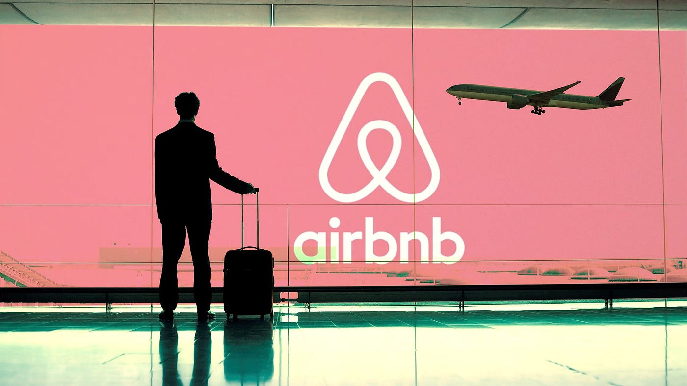

Feb 19
More than breakfast business model
A lesson from Airbnb and a new way of seeing competition

Who gives you air bed and breakfast for free or cheaper gives you a very important starting point for a promising successful journey that will be about chasing your success, joy, and goal. This is the core value that I came to understand about Airbnb and I am sharing it with you because understanding this concept of hospitality could lead you to a very successful business model about sharing real estate properties that could be proportionally more successful than Airbnb because it will exploit a tiny set of people that are truly engaged for sharing hospitality rather than trying to make profits by renting houses and rooms.
This business model will target a minimum viable audience of rich people generous enough to share their beautiful properties to travelers like you and me and this by not offering us (thank air is already given but we could improve it ) bed, breakfast only but all the daily juicy and spicy things we would like to eat and drink, all of that for free because free a product or service is something that spread easily on the internet and became vastly and fastly an adopted innovation. This seems like giving paradise for free when Hyatt, Hilton, Mariott, and their networks of many competitors are selling paradise-like spaces for privileged and rich people. But How a traveler could know about your business model and rent a space without first looking and testing your offerings?
Learning to see helps us escape this competition mindset that blinds us from opportunities that the success of others brings to our own possibility of more success and make us more generous and empathic. When Airbnb came along it gave to the hotel industry a tool on their hands for a set of them to make a difference by using it as a tool for attracting more people but some of them saw them as competitors while the other set saw this idea as meaningful things coming from three silicon valley young engineers and an idea that seem like those crazy ones that failed during the past internet bubble. Giving everyone one us who has a space to rent it to anyone who likes was simply crazy and crazier is giving a paradisiac space for free to a crazy poor dumb person like me or to a Massai warrior who never slept in blocks of concrete based home but is braver than any one of us because he could affront a lion for protecting himself and his tribe.
Armed with this hospitality business model you should be like these Massais
because it is almost sure the hotel industry actors have learned to see and lost their competition-driven mindsets and taking market shares to Airbnb will for sure be like fighting with a lion because I am guessing that the effects of scale make successful startups adopt a mindset of competition and care more about market value and competitive environment rather than throwing out, meaning delivering, as many innovative as they can rather than protecting a business model that works like how Massai's protect lions. Yes, Massai never kills lions for the sake of killing and they know better or like any one of us how protecting species matter.
If after making your hospitality business’s offer free and specifically about paradisiac spaces you make it constrained in terms of the target audience by t only serving couples then I hope that when it will come to life I will be already with my wife and benefit from it leaving away this Massai single man's outfit that I am actually wearing mentally.
But as a social entrepreneur, constraining a business model in terms of offerings makes it clearly serve a specific set of persons, not the mass market, and gives you more power and rooms of possibilities of improvements and awareness because those you will serve are attached to your service because they need this feature only and anything else. Those kinds of people are simpler to start, help, and deal with because they are less demanding and clearer about what they want and need.
PS: Like with the Greyio Heart experiment that is about women software engineers, Book Dojo the publishing startup is also experimenting vidojo (vide video ‘:)’ ), a video publishing experiment about producing short videos that will illustrate some of the articles (why not columns) that are published here. After several trials and errors below is the first one and please remember screenshot story because for desktop users this short video could be embedded like if it was played on a smartphone.
and be specific